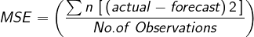

Extrapolación
Objetivo :Permita a los usuarios crear un pronóstico identificando tendencias y temporadas a partir de datos históricos de series temporales ingresados por el usuario en el 'Ingreso y ajuste de datos' pantalla. Varias opciones de extrapolación estadística están disponibles y se describirán a continuación. Las extrapolaciones de los datos de consumo se realizan unidad de planificación por unidad de planificación.
Usando esta pantalla:
1.Introducción a la extrapolación:
- Antes de usar esta pantalla, asegúrese de haber completado el 'Ingreso y ajuste de
datos' pantalla para cada unidad de planificación y región que le gustaría extrapolar
- Utilice los filtros en la parte superior de esta pantalla para seleccionar la unidad de planificación, la región para extrapolar y el rango de fechas para utilizar los datos históricos.
- El usuario puede seleccionar uno o varios de los métodos de extrapolación disponibles en QAT, según corresponda al patrón de consumo general y los datos disponibles, como se discutirá a continuación. Consulte las secciones 2 a 4 a continuación para obtener una explicación de los métodos de extrapolación y cómo elegir mejor los métodos para su pronóstico.
- Tenga en cuenta que los cambios en esta pantalla son opcionales: QAT aplica automáticamente los parámetros de extrapolación predeterminados a todas las unidades de planificación después de que se haya completado la pantalla Ajustes. Luego, el usuario hace la selección de pronóstico final en el 'Comparar y seleccionar
pronóstico' screen.
2.Métodos de extrapolación disponibles en QAT
Los métodos de pronóstico en QAT están organizados de simples a
sofisticados.
- Media móvil: El promedio móvil es un promedio que se mueve a lo largo del
tiempo, descartando datos más antiguos a medida que incorpora datos más nuevos.
Para que QAT calcule el promedio móvil, ingrese el número de meses en el pasado
que le gustaría usar en el cálculo del promedio. El usuario puede seleccionar
cualquier número entero positivo para este campo. Introducir 5, por ejemplo,
significaría que la proyección para el próximo mes de la serie sería el promedio
del promedio de los cinco meses anteriores. Este método es más útil para pronósticos
a corto plazo y es sensible a las tendencias. No es apropiado para datos
estacionales.
- Semi-Promedios:Semi-promedio estima tendencias basadas en dos mitades de una
serie. QAT divide los datos reales en dos partes iguales (mitades) y la media
aritmética de los valores de cada parte (mitad) se calcula como los valores y de dos
puntos en una línea. La pendiente de la línea de tendencia está determinada por
la diferencia entre estos valores y a lo largo del tiempo, según lo definido por
la diferencia de los puntos medios de las dos mitades de la serie, o valores x, de
los puntos. Este método es sensible a las tendencias y útil para pronósticos a corto
y mediano plazo, pero no es apropiado para datos estacionales.
- Regresión lineal: La regresión lineal modela la relación entre dos variables
ajustando una ecuación lineal a los datos observados. Intervalo de confianza :
entre 0% y 100% (exclusivo), por ejemplo, un nivel de confianza del 90% indica
que el 90% de los puntos futuros posibles caerán dentro de este radio de predicción
representado por la línea de regresión. Este método no es apropiado para datos
estacionales.
- Suavizado triple exponencial (Holt-Winters): En las estadísticas, se utilizan
diferentes tipos de suavizado para filtrar el ruido, de modo que podamos ver los
patrones en un conjunto de datos de series temporales con mayor claridad. El suavizado
exponencial utiliza datos más antiguos con pesos que disminuyen exponencialmente a lo
largo del tiempo. Los parámetros de suavizado en el suavizado exponencial se establecen
entre 0 y 1, con valores cercanos a 1 que favorecen los valores recientes y valores
cercanos a 0 que favorecen los valores más antiguos. Los usuarios que utilizan el
suavizado exponencial triple pueden elegir entre cuatro parámetros:
- alfa, se aplica al nivel o línea de base del conjunto de datos. Los valores alfa más altos dan más peso a los datos más recientes
- beta, determina con qué fuerza se deben valorar las tendencias recientes en comparación con las tendencias más antiguas
- gama, refleja el componente estacional del pronóstico. Estacional generalmente se refiere a patrones repetitivos dentro de un año. Cuanto más alta sea la gamma, más ponderación se aplicará al componente estacional más reciente de los datos.
- estacionalidad: En QAT, una temporada se puede describir como la duración
esperada (en meses) de cualquier patrón repetitivo en el consumo
- Intervalo de confianza: entre 0% y 100% (exclusivo), por ejemplo, un nivel
de confianza del 90% indica que el 90% de los puntos futuros se encontrarán
dentro de este radio de predicción.
- ARIMA: El modelado ARIMA permite integrar dos modelos estadísticos
diseñados para series temporales estacionarias y aplicarlos a series temporales
no estacionarias, es decir, series temporales que tienen tendencias o estaciones.
A menudo se aplica a pronósticos a corto plazo. Auto-regresivo significa que
cada punto en la regresión está influenciado por sus valores anteriores y
promedio móvil implica que cada punto es un promedio, una combinación lineal
de uno o más puntos adyacentes. Tanto la autorregresión como el promedio móvil
se integran juntos para ajustar el mejor modelo para la serie a través de la
diferenciación, o literalmente usando la diferencia entre puntos en una serie
de tiempo para el análisis en lugar de los valores sin procesar. Los modelos
ARIMA tienen tres parámetros:
- p o AR (orden de retardo): el número de observaciones de retraso en el
modelo
- d o I (grado de diferenciación): el número de veces que se diferencian
las observaciones sin procesar. Este valor es normalmente 1
(si hay tendencia) o 0 (sin tendencia). Otros valores más altos son
posibles pero no esperados.
- q o MA (orden de la media móvil): el tamaño de la ventana del promedio
móvil o el número de observaciones diferenciadas que se promediarán.
- Los valores predeterminados de QAT para los parámetros ARIMA son p = 0, d = 1, q = 1.
- Intervalo de confianza: entre 0% y 100% (exclusivo) ej. El nivel de confianza del
90 % indica que el 90 % de los puntos futuros caerán dentro de este radio de predicción.
3.¿Qué método de extrapolación debo utilizar?
continuación se presentan algunas consideraciones para seleccionar un
método de pronóstico. Los métodos de pronóstico en QAT están organizados de simples a
sofisticados. En general,
- Los modelos más sofisticados son más sensibles a los problemas en los datos
- Si tiene datos más deficientes (puntos de datos faltantes, tasas de informes
variables, 12 meses de datos),
se recomiendan métodos de pronóstico más simples
La elección del método de extrapolación depende del patrón esperado en los
datos. Algunos patrones típicos incluyen:
- Estacionario, donde el rango de valores observados a lo largo del tiempo ronda
un promedio. Los modelos aplicados a dichos conjuntos de datos pueden incluir
- Tendencia sin componente estacional, donde los valores observados tienen una
tendencia creciente o decreciente. Los modelos aplicados a dichos conjuntos de
datos pueden incluir
- Semipromedios
- Regresión lineal
- Tendencia y estacional, donde los valores observados en un conjunto de datos
tienen componentes de tendencia y estacionales. Los modelos aplicados a dichos
conjuntos de datos pueden incluir
- Modelo ARIMA estacional
- Suavizado triple exponencial (Holt-Winters)
- Estacional sin tendencia,
donde los valores observados tienen un componente estacional pero no una tendencia. Modelos
aplicado a dichos conjuntos de datos puede incluir
- Suavizado triple exponencial (Holt-Winters)
Los modelos sugeridos aquí
no son exhaustivos ni exclusivos. QAT permite al usuario aplicar
una variedad de métodos de extrapolación y luego compararlos usando los mejores
métricas de error de ajuste o pronóstico.
El segundo paso es considerar si se espera que los valores de pronóstico
reflejen fielmente los patrones históricos en sus datos y, por lo tanto, si
utilizará las métricas de error para informar su selección. Sin embargo, al
optar por ignorar la métrica de error, será importante documentar su
justificación para hacerlo para informar las discusiones o revisiones de su
pronóstico y ayudar a los futuros pronosticadores a respaldar sus decisiones.
4.¿Cómo interpreto los errores?
QAT calcula automáticamente las métricas de error de pronóstico utilizando
varios métodos. Éstos incluyen:
- MAPE (Mean Absolute Percentage Error): puede interpretarse como el porcentaje promedio
diferencia entre las predicciones y sus objetivos previstos en el conjunto de datos. Por ejemplo, si
MAPE es del 15%, entonces sus predicciones están en promedio un 15% lejos de los valores reales.

- WAPE (Error porcentual absoluto ponderado): WAPE es una métrica apropiada para cuando el
El conjunto de datos utilizado tiene valores bajos o intermitentes. Un porcentaje WAPE de 5 significa que el
El pronóstico estuvo desviado en un 5% en todo el conjunto de datos durante un determinado período de evaluación. Dependiendo de
En el caso de uso, se recomienda elegir un modelo que proporcione el menor valor WAPE.

- RMSE (error cuadrático medio): RMSE se puede interpretar como el error promedio que
Las predicciones del modelo tienen en comparación con las reales, con peso adicional agregado a mayores.
errores de predicción. Generalmente, cuanto más cerca esté el RMSE de cero, más preciso será el modelo.

- MSE (error cuadrático medio): MSE es la media agregada de la diferencia al cuadrado entre
los hechos y las predicciones. Debido a esta cuadratura se resaltan grandes errores. MSE es útil
cuando se trabaja en modelos donde se deben minimizar grandes errores ocasionales. Generalmente, el
cuanto más cerca esté de 0, más preciso será el modelo.

- R 2 (la correlación al cuadrado entre la variable dependiente y los valores ajustados):
R 2 = 1 - [regresión suma de cuadrados (SSR) / suma total de cuadrados (SST)], donde la suma
el cuadrado de los residuos de la regresión (SSR) es la suma de sus residuos al cuadrado, y el
La suma total de cuadrados (SST) es la suma de la distancia entre los datos y la media, todos
al cuadrado. El valor de R 2 es siempre un número entre 0 y 1. R 2 es una medida del ajuste de un
línea de regresión a una serie de observaciones históricas con valores más cercanos a 1 que indican una
correspondencia más fuerte entre los valores reales y predichos (modelo de regresión). Es
no es una medida de error y no debe usarse por sí solo para evaluar la idoneidad de una predicción,
pero en combinación con otras métricas de error y el conocimiento del programa por parte del usuario.

Aparte de R 2, cuanto menor sea la puntuación, más se ajustará el resultado del método de pronóstico a la situación histórica.
datos. En modelos donde se espera que los patrones históricos en un conjunto de datos se reflejen en el futuro
valores, se podría utilizar un valor de error bajo para ayudar a seleccionar un método de extrapolación preferido, y QAT
resaltará estos mejores ajustes en una tabla. Sin embargo, si se producen cambios sustanciales que no se ajusten a la situación histórica
Si se anticipan datos, la extrapolación que mejor se ajusta puede no ser el pronóstico más apropiado para seleccionar.
Para hacer la mejor selección entre los métodos de extrapolación para su
propósito, lo más importante es primero comprender qué método de extrapolación
es el más apropiado para el patrón esperado en los datos. Los métodos de
pronóstico en QAT están organizados de simples a sofisticados. En general,
- Los modelos más sofisticados son más sensibles a los problemas en los datos
- Si tiene datos más deficientes (puntos de datos faltantes, tasas de informes
variables, 12 meses de datos),
se recomiendan métodos de pronóstico más simples
El segundo paso es considerar
si se espera que los valores de pronóstico reflejen fielmente los patrones
históricos en sus datos y, por lo tanto, si utilizará las métricas de error
para informar su selección. Sin embargo, al optar por ignorar la métrica de
error, será importante documentar su justificación para hacerlo para informar
las discusiones o revisiones de su pronóstico y ayudar a los futuros
pronosticadores a respaldar sus decisiones.
Nota : Tú tienes 0 meses de datos de consumo acutal. Los valores mínimos necesarios para
las diversas características se encuentran a continuación.:
* TES, Holt Winters: Al
menos 24 meses de datos de consumo real
* ARIMA: Al menos 14 meses de datos de consumo real
* Promedio móvil, semipromedios y regresión lineal: Al menos 3 meses
de datos de consumo real
|